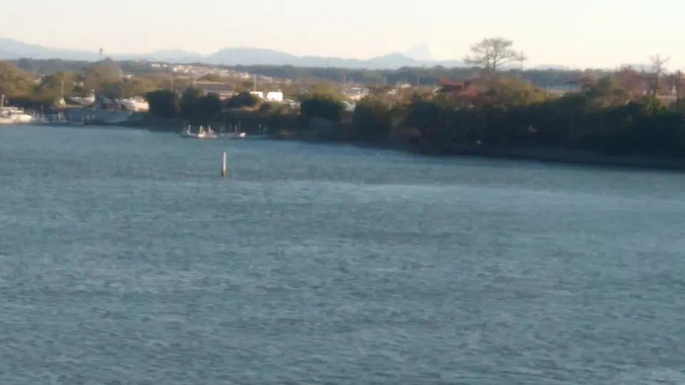
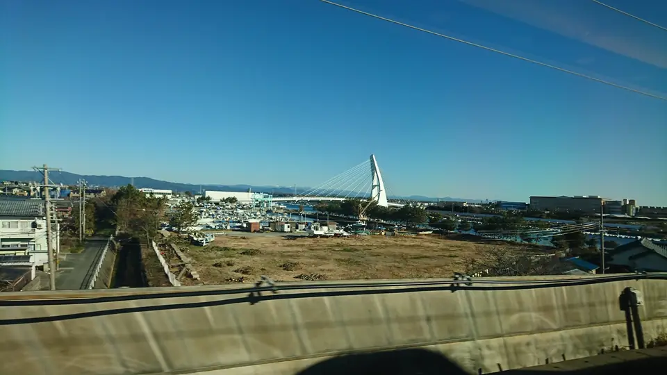

TOKAIDO SHINKANSEN WINDOW VIEW
When can you see Mt. Fuji beyond Lake Hamana from the Shinkansen?
Fuji beyond the lake.

- Section
- Hamamatsu → Toyohashi
- Seat side
- Seat E · mountain side
- Timing
- About 73 minutes after leaving Tokyo on a Nozomi train
- Photos
- 3 photos
Location at a glance
Open mapSwitch between the spot and the Shinkansen viewpoint.
How to find Mt. Fuji beyond Lake Hamana
Around Lake Hamana, Mt. Fuji can sometimes be seen far in the distance when the air is clear. It is nothing like the dramatic close view near Shin-Fuji: this is a tiny Fuji to search for beyond the lake and sky, a rare window-seat bonus on crisp clear days.
If you are traveling from Tokyo toward Shin-Osaka, start watching the Seat E · mountain side window as you approach Hamamatsu → Toyohashi. If you are traveling toward Tokyo, the order is reversed.
Why this view matters
Mt. Fuji beyond Lake Hamana is one of the window views that make the Tokaido Shinkansen more than a transfer. The train moves fast, so visibility depends on weather, seat position, and timing.
Mt. Fuji beyond Lake Hamana in photos

